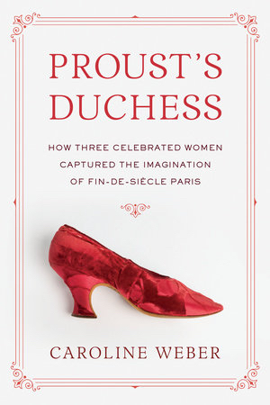

This is a book about
Proust's Duchess: How Three Celebrated Women Captured the Imagination of Fin-de-Siecle Paris
Proust’s Duchess is a triple biography of these women. It traces the interweaving paths they took in their rise to social stardom and studies the inventive strategies they used to get there. It relates their conquest of a world where projecting an image was the precondition, and the price, of belonging. It considers what was lost and what won, what was hidden and what laid bare, when selves became characters and lives became stories.
It recounts their most dazzling triumphs; it unveils their darkest secrets. It follows them into the heady glare of mass adulation and finds them again in the dim precincts of loneliness. It presents them as they wanted the world to see them and as they were when they thought no one was looking.
Hemmed in by unhappy marriages and restrictive gender norms, the three protagonists of this book sought a measure of freedom and fulfillment by recasting themselves as icons. They reinvented themselves as archetypes of a storied and exclusive social milieu whose cachet reached unprecedented heights at the turn of the last century, only to collapse in the chaos of World War I. Together, they inspired Marcel Proust (1871-1922) to create the composite character of the Duchesse de Guermantes, who epitomizes patrician grandeur and reigns over aristocratic society in his great novel, In Search of Lost Time (1913-1927).
Proust's Duchess: How Three Celebrated Women Captured the Imagination of Fin-de-Siecle Paris
 real people
turning into fictions, in the context of a class—the French aristocracy—which at the end of the nineteenth century was dying as a political force while resurrecting itself as a myth. Central to that symbolic revival were three doyennes of Parisian high society who transformed themselves, and were transformed by those around them, into living legends: paragons of nobility, elegance, and style. Their names were Geneviève Halévy Bizet Straus
Geneviève Bizet Straus (1849–1926); Laure de Sade, Comtesse Adhéaume de Chevigné
Laure de Chevigné (1859–1936); and Élisabeth de Riquet de Caraman-Chimay, Vicomtesse (later Comtesse) Greffulhe
Élisabeth Greffulhe
(1860–1952).
real people
turning into fictions, in the context of a class—the French aristocracy—which at the end of the nineteenth century was dying as a political force while resurrecting itself as a myth. Central to that symbolic revival were three doyennes of Parisian high society who transformed themselves, and were transformed by those around them, into living legends: paragons of nobility, elegance, and style. Their names were Geneviève Halévy Bizet Straus
Geneviève Bizet Straus (1849–1926); Laure de Sade, Comtesse Adhéaume de Chevigné
Laure de Chevigné (1859–1936); and Élisabeth de Riquet de Caraman-Chimay, Vicomtesse (later Comtesse) Greffulhe
Élisabeth Greffulhe
(1860–1952).